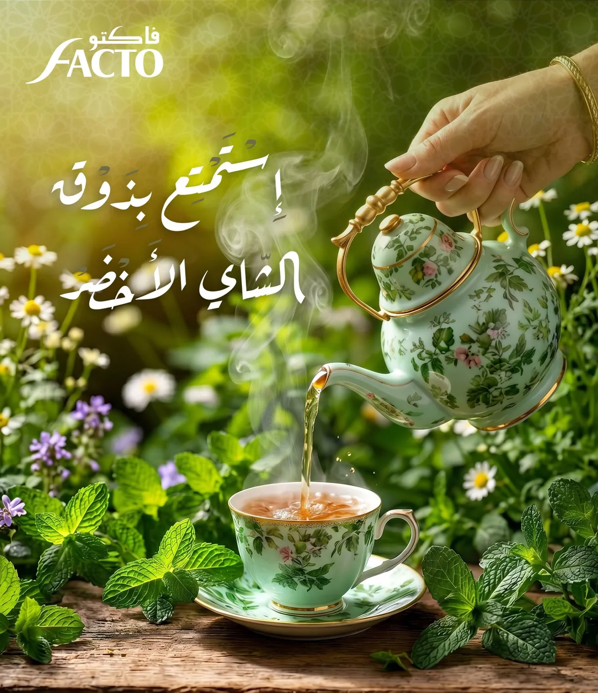

Une gamme, cinq rituels.
Du plus doux au plus corsé, trouvez le café Facto qui vous ressemble.


Grand Arabica
Notre café le plus délicat. Les grains Arabica sont torréfiés avec douceur pour révéler leurs arômes : une tasse ronde, parfumée et élégante, idéale pour les moments de partage.


Sélection
L'assemblage signature de la maison. Sélection réunit la finesse de l'Arabica et la force du Robusta pour un café équilibré qui plaît à toute la famille.


Pure Robusta
Pour ceux qui aiment le café fort. Pure Robusta offre une tasse puissante, riche en crème et en caractère : un vrai café qui réveille.


Green Tea
Le thé vert Facto, sous son sachet kraft orné du chameau et du voyageur du désert. Un thé pour la théière familiale, à servir à la menthe fraîche.

Espresso
Une gamme de capsules Espresso aux couleurs distinctes, pour retrouver le goût Facto en une pression, avec une crème dense et onctueuse.
Le café parfait, en 4 gestes.
L'eau
Remplissez la base de la cafetière d'eau froide, jusqu'à la valve.
La mouture
Versez le café Facto sans le tasser, pour libérer tous ses arômes.
Le feu doux
Chauffez doucement et retirez dès que le café commence à monter.
Le partage
Servez aussitôt, avec des dattes ou un gâteau de la maison.